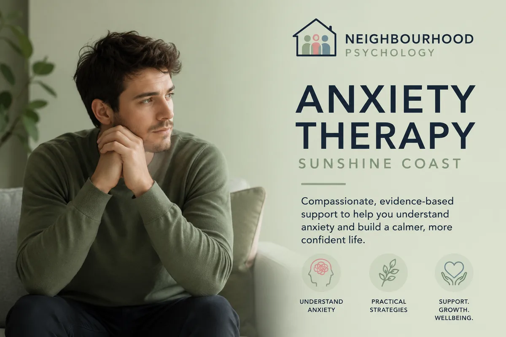
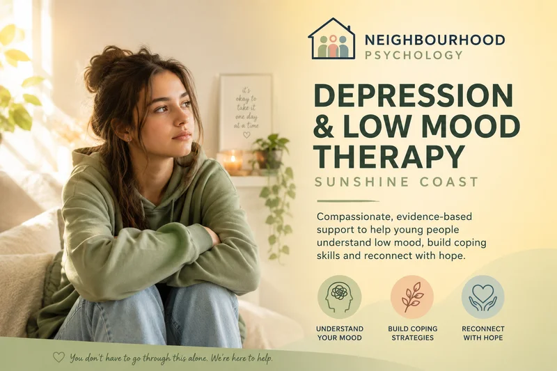

Evidence-based support for anxiety and depression in children, teens and adults. Practical, compassionate therapy that makes a real difference in everyday life — in person in Maroochydore or via Telehealth.
Anxiety and low mood are two of the most common reasons people seek psychological support — and they often travel together. At Neighbourhood Psychology, we provide evidence-based therapy for the full range of anxiety presentations and mood difficulties, tailored to each individual's age, circumstances and goals.
Whether you're dealing with constant worry that won't switch off, panic attacks, a persistent low mood that's flattened your interest in life, or a mix of all of the above — this page is for you.
Who this helps: Children, teenagers and adults experiencing persistent worry, panic attacks, social anxiety, low mood, or depression. Sessions are available in-person in Maroochydore and via Telehealth Australia-wide. Medicare rebates apply with a valid Mental Health Care Plan. No referral is required to make an enquiry.

Anxiety is a normal human response — but when it becomes persistent, intense or starts interfering with daily life, it's worth getting support. Anxiety can show up in many different ways, and what helps one person may look quite different for another.

Depression is more than feeling sad. It can show up as a persistent flatness, a loss of interest in things that used to matter, difficulty getting through the day, or a sense of being disconnected from yourself and the people around you. It affects people differently — and it often goes unrecognised for longer than it should.
We use evidence-based approaches tailored to the individual. Depending on what you're dealing with, this might include:
Anxiety and low mood look different in young people — and they don't always have the words for what's going on. What shows up as irritability, school avoidance, withdrawal, or "difficult" behaviour is often a young person struggling to manage something they don't yet have the tools for. We work in an age-appropriate, engaging way that meets kids where they are, while keeping parents informed and involved throughout.
Anxiety tends to involve excessive fear, worry or avoidance — often focused on future threats or uncertainty. Depression tends to involve persistent low mood, loss of interest or motivation, and feelings of worthlessness or hopelessness. The two often occur together, and effective treatment addresses both. A thorough initial assessment helps clarify the picture and guides the approach.
Yes — anxiety is one of the most common presentations in children and adolescents. It can significantly affect learning, friendships, sleep and emotional wellbeing. The good news is that evidence-based therapy is highly effective for most anxiety presentations in young people.
Yes. Anxiety can contribute to headaches, nausea, muscle tension, fatigue and difficulty sleeping. These symptoms are real and can be very distressing — and they are also very treatable with the right support.
No referral is required to book an appointment. However, if you wish to access Medicare rebates through a Mental Health Care Plan, a GP referral is needed. We can help you understand this process.
This varies depending on the individual, the nature and severity of the concern, and your goals. We'll discuss a realistic plan from the outset and check in regularly on progress. Most people notice meaningful improvement within 6–12 sessions, though this varies.
With the right support, most people see real and lasting improvement. Reach out to find out whether we're the right fit.